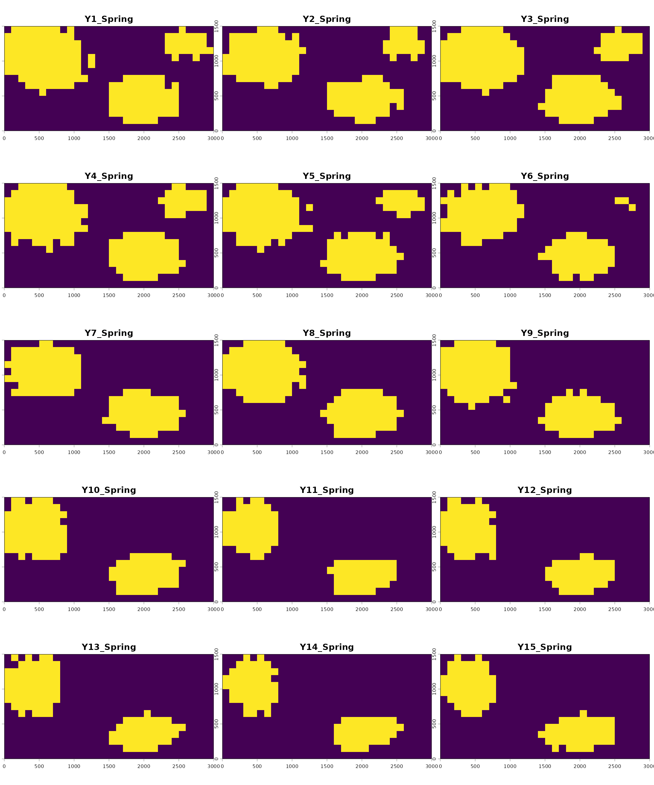
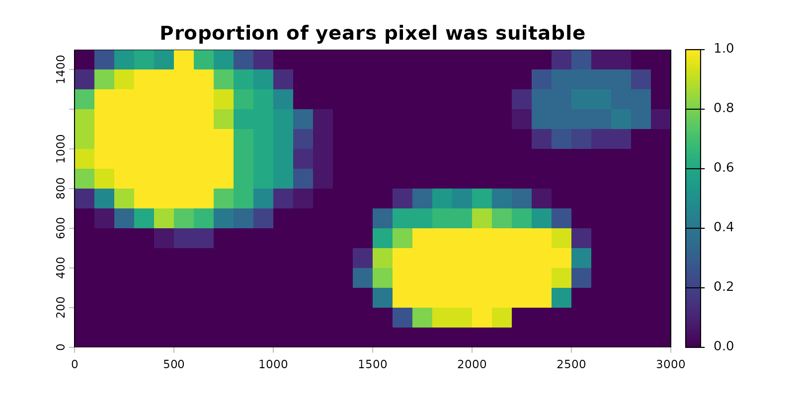
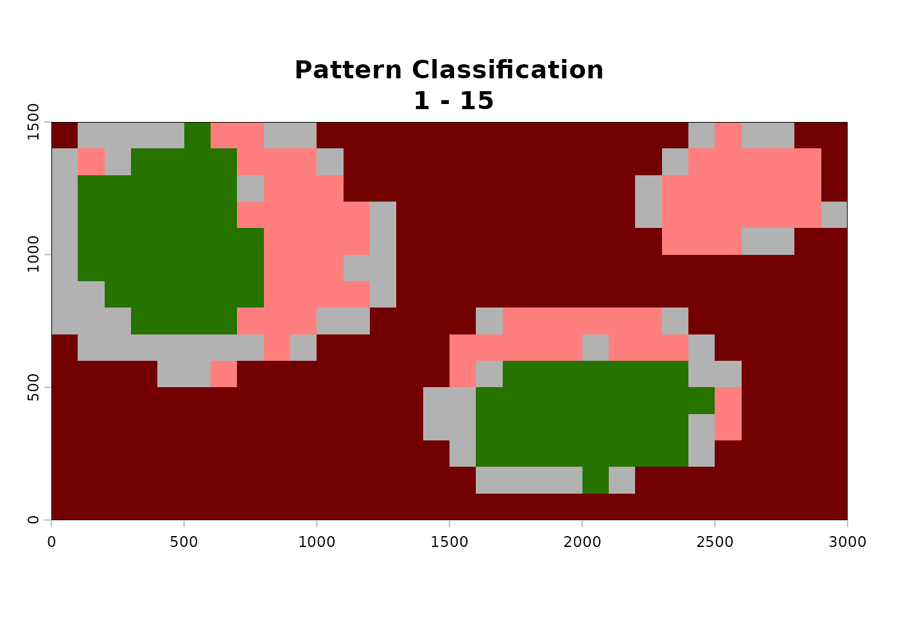
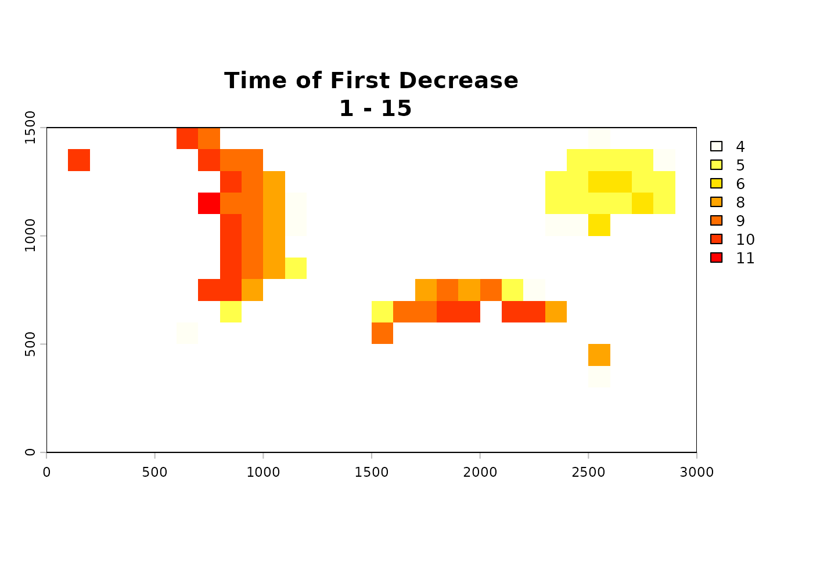
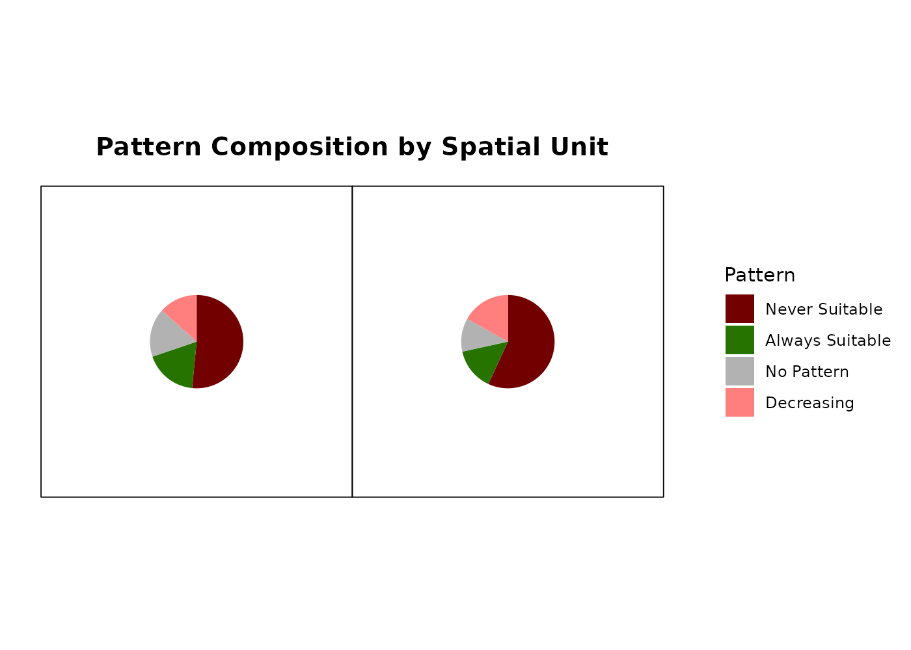
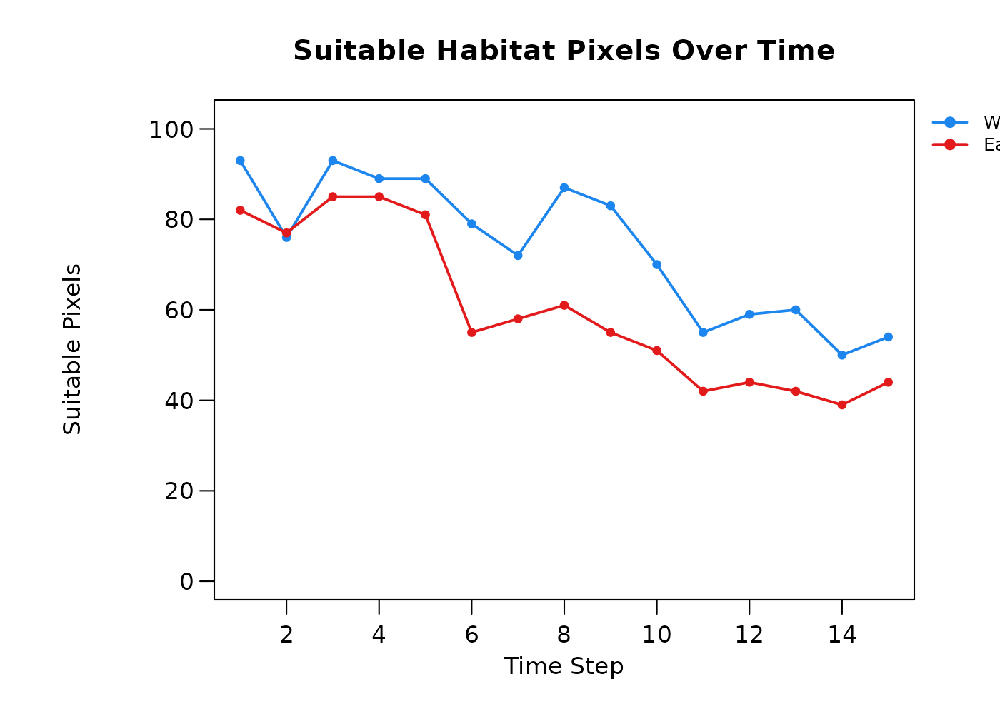
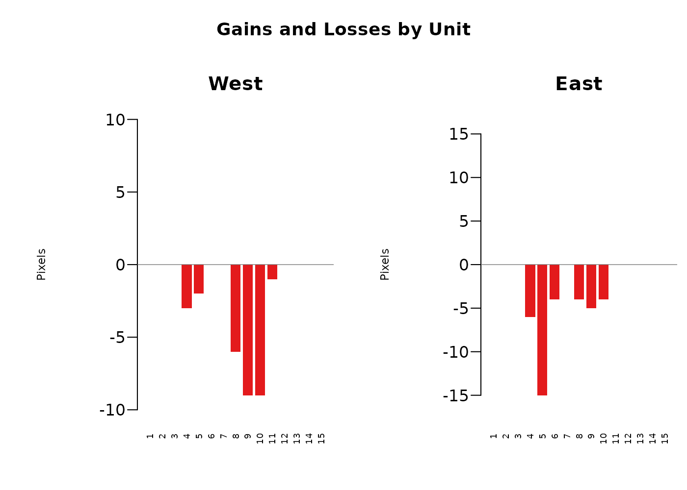

Summary
- Overview
- Consensus and frequency summarisation
- Detecting temporal patterns
- Aggregating by spatial unit
- Summary
Overview
The modeling phase described in the previous four vignettes each produces per-fold consensus prediction rasters across time steps. These are useful, but will often result in stacks of individual predictions (10s to sometimes 100s of rasters) that may be difficult to make straightforward sense of. The goal of the postprocessing phase is to take this abundance of data and summarize it in interpretable ways, mainly focused on understanding the overarching temporal dynamics of each pixel, and summarizing these change patterns regionally for intuitive analyses.
Three functions cover this phase, run in order:
-
summarize_raster_outputs()- summarizes fold-vote rasters output fromgenerate_spatiotemporal_predictions()into a binary consensus stack (one binary raster per time step) and a frequency raster (the percent of time steps where the binary results indicate suitability). This is important because all subsequent processes require binary rasters as their inputs. -
analyze_temporal_patterns()- classifies each pixel’s trajectory through time via changepoint detection, resulting in a single raster classifying each pixel as either ‘stable suitable’, ‘stable unsuitable’, ‘increasing in suitability’, ‘decreasing in suitability’, ‘fluctuating’, or ‘no pattern’. It also produces a ‘time of first change’ raster indicating when those increases or decreases occured. -
analyze_trends_by_spatial_unit()- aggregates pixel-level patterns across user-defined polygons. This takes potentially complicated rasters with many pixels and gives regional summaries of the spatiotemporal dynamics of each spatial unit.
This vignette uses the bundled inst/extdata/predictions/
raster set, which contains 15 per-year fold-vote rasters from the
seasonal workflow’s generate_spatiotemporal_predictions()
call, projecting tmr_glm across years 1-15 for the Spring
season only. These are the same files referenced by
tmr_predictions$prediction_files and are produced and
inspected in the Modeling with a GLM
vignette. The underlying dataset is described in About the Example Dataset.
library(TemporalModelR)
library(terra)
#> terra 1.9.27
library(sf)
#> Linking to GEOS 3.12.1, GDAL 3.8.4, PROJ 9.4.0; sf_use_s2() is TRUE
pred_dir <- system.file("extdata/predictions", package = "TemporalModelR")
list.files(pred_dir, pattern = "\\.tif$")[1:5]
#> [1] "Prediction_1_Spring.tif" "Prediction_10_Spring.tif"
#> [3] "Prediction_11_Spring.tif" "Prediction_12_Spring.tif"
#> [5] "Prediction_13_Spring.tif"Each pixel of each raster indicates the number of folds which our model predicts that pixel as suitable in that given year. Because this was a four fold model, possible per-pixel values range from 0 (no folds predict this pixel as suitable) to 4 (all folds predict this pixel as suitable).
Consensus and frequency summarisation
summarize_raster_outputs() applies a consensus threshold
to convert the fold-count rasters into binary suitability rasters, which
are needed for all postprocessing analyses. These simplify the fold
count rasters by setting a threshold of how many folds must agree for
the pixel to be considered suitable in the postprocessing analyses. A
very conservative modeling process may want all folds to agree for a
pixel to be considered suitable (in that case, we would indicate a
threshold of 4). A more relaxed modeling process may only require half
of the folds to agree for a pixel to be considered suitable (threshold
here of 2). The choice depends on the cost of false positives versus
false negatives in the given application. Higher consensus is more
conservative; lower consensus is more sensitive. Lower consensus
thresholds may also introduce additional noise into the postprocessing
results, which should be considered for this process.
In either case, all pixels which meet or exceed the user set threshold become a binary ‘1’ for suitable, and all others become a binary ‘0’ for unsuitable.
A ‘frequency file’ is also produced based on the binarized rasters. This is a single raster which indicates the proportion of time steps for which the binary rasters agree a pixel is suitable, and is a good indication of the temporal stability of a pixel’s predictions.
summary_out <- summarize_raster_outputs(
predictions_dir = pred_dir,
output_dir = file.path(tempdir(), "Binary"),
consensus = 2,
overwrite = TRUE,
verbose = FALSE
)
names(summary_out)
#> [1] "consensus_stack" "frequency_raster" "consensus" "n_timesteps"
#> [5] "consensus_dir" "frequency_file"The returned object contains the following items:
-
$consensus_stack- multi-layerSpatRasterwith one layer per input time step. For each layer, pixels are 1 where the threshold of folds in agreement set byconsensusis met and 0 elsewhere. -
$frequency_raster- single-layerSpatRastergiving the proportion of time steps each pixel was suitable under the chosen consensus threshold. Values range from 0 (never suitable) to 1 (always suitable). -
$consensus- the consensus threshold value used. -
$n_timesteps- number of time steps processed (equal to the number of input rasters). -
$consensus_dir- path to the directory containing the per-time-step binary consensus rasters that were written to disk. -
$frequency_file- path to the written frequency raster file.
We can visualize the per-year consensus stack to inspect the year-to-year breakdown of projected suitability.
binary_stack <- summary_out$consensus_stack
frequency_rast <- summary_out$frequency_raster
names(binary_stack) <- paste0("Y", 1:15, "_Spring")
terra::plot(binary_stack, nr = 5, nc = 3,
mar = c(1.5, 0.5, 1.5, 0.5), legend = FALSE)
Suitable pixels (1) appear in yellow and unsuitable pixels (0) in purple. The reduction in suitable area starting around year 6 reflects the deforestation trend present in the underlying forest cover rasters, just as would be expected based on the changing landscape.
The frequency raster is a single layer summarising all 15 panels into one:
terra::plot(frequency_rast,
main = "Proportion of years pixel was suitable",
mar = c(2.5, 2.5, 2.5, 5.0))
Pixels of consistently suitable habitat sit close to 1, indicating they were always predicted as suitable. Pixels that gained or lost suitability across the time series sit between 0 and 1, indicating suitability was inconsistent across time. Surrounding areas sit at 0, indicating they were never suitable. The pixels with values between 0 and 1 are the ones that will carry information for the changepoint detection in the next section.
Detecting temporal patterns
analyze_temporal_patterns() applies changepoint
detection to each pixel’s binary suitability time series, classifying it
into one of six categories:
- Never suitable - pixel is unsuitable in every time step.
- Always suitable - pixel is suitable in every time step.
- No pattern - pixel varies through time but no significant structured change is detected.
- Increasing suitability - pixel transitions from unsuitable to suitable at a detectable change point.
- Decreasing suitability - pixel transitions from suitable to unsuitable at a detectable change point.
- Fluctuating - pixel shows multiple direction changes through time.
Changepoint detection runs via
fastcpd::fastcpd_binomial() with each pixel’s
previous-time-step value included as a predictor to account for temporal
autocorrelation. When spatial_autocorrelation = TRUE, the
proportion of a pixel’s first-order neighbours classified as suitable in
each time step is also considered as an additional covariate to the
changepoint detection model, accounting for spatial autocorrelation in
the predictive surface.
The fastcpd package is a hard dependency of
analyze_temporal_patterns() and must be installed before
running:
install.packages("fastcpd")Additionally, unlike other functions in TemporalModelR which may use
cyclical or temporally nonlinear time steps (like multiple seasons
within a year where predictions are expected to fluctuate),
analyze_temporal_patterns() expects a linear time series to
run the analysis on. In our example, we could have rerun all our
examples at an annual scale rather than a seasonal scale and passed that
result to this analysis. Alternatively, we may run this analysis on a
subset of the data we produced during the previous steps. For example,
here we explore the spatiotemporal trends in Springtime suitability in
our study region. We define this subset using time_steps
and the function appropriately selects the matching subset of our
predictions from summarize_raster_outputs().
time_steps <- expand.grid(
year = 1:15,
season = "Spring",
stringsAsFactors = FALSE
)
patterns <- analyze_temporal_patterns(
binary_stack = binary_stack,
summary_raster = frequency_rast,
time_steps = time_steps,
output_dir = file.path(tempdir(), "Patterns"),
spatial_autocorrelation = TRUE,
alpha = 0.05,
estimate_time = FALSE,
overwrite = TRUE,
verbose = FALSE
)

names(patterns)
#> [1] "pattern" "time_decrease" "time_increase"The returned object contains the following items:
-
$pattern- integerSpatRasterwith values 1 through 6 corresponding to the six categories above. -
$time_decrease-SpatRastershowing the time step at which the first significant decrease was detected for pixels classified as decreasing.NAelsewhere. -
$time_increase-SpatRastershowing the time step at which the first significant increase was detected for pixels classified as increasing.NAelsewhere.
This function is computationally complex and may take many hours or days to run on large datasets, and can also be very memory intensive. The following optional arguments help amend memory issues and make estimates about runtime:
-
n_tiles_xandn_tiles_y- for large rasters, set these greater than 1 to process in spatial tiles and reduce peak memory use. Default is1(no tiling). Each tile is processed independently and the results are mosaicked at the end. -
estimate_time- whenTRUE(default), the function samples a few pixels first and reports an estimated total runtime before committing to the full job. Useful for very long time series or very large or fine-scale rasters. We disable it above since the bundled example is small.
A few additional considerations relevant to this function:
- The significance level for the changepoint detection defaults to
0.05. Reducing the threshold of significance can be done by changing thealphaparameter. Lower alpha produces fewer false-positive changepoints but may also miss real ones. - Time series shorter than ~15 time steps may be too short to detect increases or decreases reliably. The function will return mostly “no pattern” or “never/always suitable” classifications.
- The classification assumes consecutive rasters representing the same temporal scale (e.g. consecutive years). Mixing scales or skipping time steps will distort the results.
- The 15-year Spring-only example used here is right at the lower end of what changepoint detection can use. With more years of data the classifications become more reliable.
In the above example, the decreasing pixels show change points clustered in the years where forest cover is reduced, which matches what would be expected based on the simulated data. The time of increase raster is mostly empty because the example data does not include any large-scale habitat gain events.
Aggregating by spatial unit
analyze_trends_by_spatial_unit() overlays user-defined
polygons (administrative units, watersheds, ecoregions, etc.) on the
prediction and pattern rasters and produces summary tables of habitat
composition and trajectory composition per polygon.
For the example dataset, we construct two simple zones: a western half and an eastern half of the study area, and aggregate the patterns within each.
study_crs <- sf::st_crs(binary_stack)
zones_sf <- rbind(
sf::st_sf(ZONE = "West",
geometry = sf::st_sfc(sf::st_polygon(list(
matrix(c(0, 0, 1500, 1500, 0,
0, 1500, 1500, 0, 0), ncol = 2)
)), crs = study_crs)),
sf::st_sf(ZONE = "East",
geometry = sf::st_sfc(sf::st_polygon(list(
matrix(c(1500, 1500, 3000, 3000, 1500,
0, 1500, 1500, 0, 0), ncol = 2)
)), crs = study_crs))
)This is simple for the sake of the example, but the function can handle any number of complex polygons to represent the preferred boundaries of a region.
The function takes the zone polygons plus any subset of the results
from summarize_raster_outputs() or
analyze_temporal_patterns(). It creates summary tables and
optionally produces figures based on the input information. Different
combinations of inputs produce different subsets of the output tables.
Our example uses all available inputs from the previously run
functions.
zone_summary <- analyze_trends_by_spatial_unit(
shapefile_path = zones_sf,
name_field = "ZONE",
binary_stack = binary_stack,
pattern_raster = patterns$pattern,
time_decrease_raster = patterns$time_decrease,
time_increase_raster = patterns$time_increase,
time_steps = time_steps,
output_dir = file.path(tempdir(), "ZoneSummary"),
create_plot = FALSE,
verbose = FALSE
)
#> | | | 0% | |=== | 7% | |======= | 13% | |========== | 20% | |============= | 27% | |================= | 33% | |==================== | 40% | |======================= | 47% | |=========================== | 53% | |============================== | 60% | |================================= | 67% | |===================================== | 73% | |======================================== | 80% | |=========================================== | 87% | |=============================================== | 93% | |==================================================| 100%
#> | | | 0% | |=== | 7% | |======= | 13% | |========== | 20% | |============= | 27% | |================= | 33% | |==================== | 40% | |======================= | 47% | |=========================== | 53% | |============================== | 60% | |================================= | 67% | |===================================== | 73% | |======================================== | 80% | |=========================================== | 87% | |=============================================== | 93% | |==================================================| 100%
names(zone_summary)
#> [1] "overall_summary" "timestep_summary" "change_by_timestep"The returned object contains the following items, with the set of present tables depending on which raster inputs were supplied:
-
$overall_summary- pattern composition per spatial unit, with one row per zone and columns for the count of pixels in each of the six pattern categories. Present whenpattern_rasteris supplied.
zone_summary$overall_summary
#> Spatial_Unit Always_Absent Always_Present No_Pattern Increasing Decreasing
#> 1 West 116 41 38 0 30
#> 2 East 128 33 26 0 38
#> Fluctuating Failed Total_Pixels Pct_Always_Absent Pct_Always_Present
#> 1 0 0 225 51.56 18.22
#> 2 0 0 225 56.89 14.67
#> Pct_No_Pattern Pct_Increasing Pct_Decreasing Pct_Fluctuating Prop_Increasing
#> 1 16.89 0 13.33 0 0
#> 2 11.56 0 16.89 0 0
#> Prop_Stable_Suitable Prop_Decreasing Prop_Stable_Unsuitable
#> 1 37.61 16.30 63.04
#> 2 34.02 19.79 66.67-
$timestep_summary- suitable pixel count per unit per time step, useful for plotting habitat area through time for each zone. Present whenbinary_stackis supplied.
head(zone_summary$timestep_summary)
#> Spatial_Unit Time_Step Pixels_Suitable
#> 1 West 1 93
#> 2 East 1 82
#> 3 West 2 76
#> 4 East 2 77
#> 5 West 3 93
#> 6 East 3 85-
$change_by_timestep- counts of gain (first increase) and loss (first decrease) events per unit per time step. Present when both change rasters are supplied.
head(zone_summary$change_by_timestep)
#> Spatial_Unit Time_Step Decrease_Pixels Increase_Pixels
#> 1 East 1 0 0
#> 2 East 10 4 0
#> 3 East 11 0 0
#> 4 East 12 0 0
#> 5 East 13 0 0
#> 6 East 14 0 0-
$plots- recorded plot objects produced whencreate_plot = TRUE.
More robust plots can be mannually made from the output tables, but
using create_plot = TRUE gives quick visual assessments of
the summarized spatiotemporal dynamics of the landscape.
zone_plots <- analyze_trends_by_spatial_unit(
shapefile_path = zones_sf,
name_field = "ZONE",
binary_stack = binary_stack,
pattern_raster = patterns$pattern,
time_decrease_raster = patterns$time_decrease,
time_increase_raster = patterns$time_increase,
time_steps = time_steps,
output_dir = file.path(tempdir(), "ZoneSummary"),
create_plot = TRUE,
verbose = FALSE
)


The resulting per-timestep and per-spatial-unit outputs of this function allow for a robust overarching look at the study region broken down by units we care about. An example application may be looking at habitat availability for a given species by county, understanding regionally where the most suitable habitat is, where the highest losses are occurring, and when those losses are occurring in each spatial unit. Alternatively, an agency may be interested in exploring the effect of habitat restoration projects across a number of parks. That agency could use this tool to identify which parks were seeing the largest gains of habitat in the time frame of interest, when those gains were occurring, and make further management decisions based on that.
Two zones with the same total area predicted suitable in year 15 may have very different histories: one may have been stably suitable throughout, and the other may have lost half its habitat and gained an equivalent area elsewhere. The composition table separates those cases, and the change by timestep table identifies when those changes happened.
Summary
The three postprocessing functions together convert the per-fold per-time-step prediction stack from the modeling phase into three interpretable pieces of information:
- A binary consensus surface per time step.
- A pattern classification per pixel describing its trajectory.
- A summary of pattern composition and habitat change per administrative or ecological region.
These outputs show not only where a species is likely to be, but how that is changing and where those changes are occurring, and have many practical applications.
The above workflow can be applied to any of the previously described model outputs: GLM, GAM, Random Forest or Hypervolume.